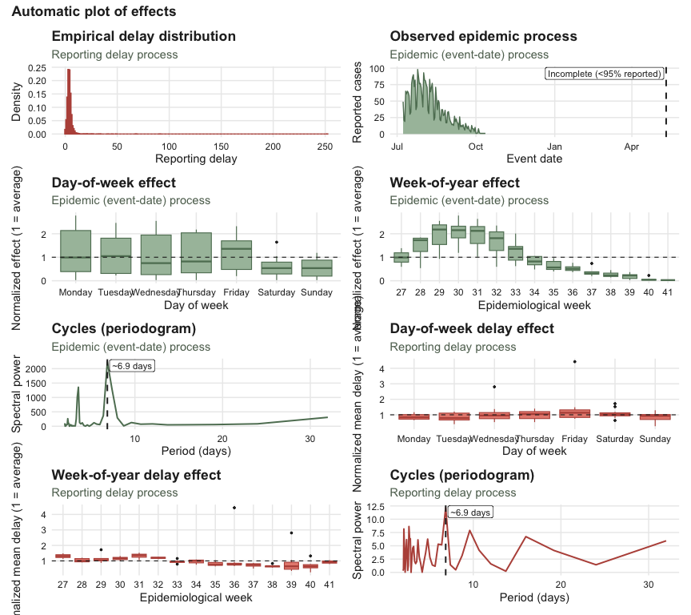
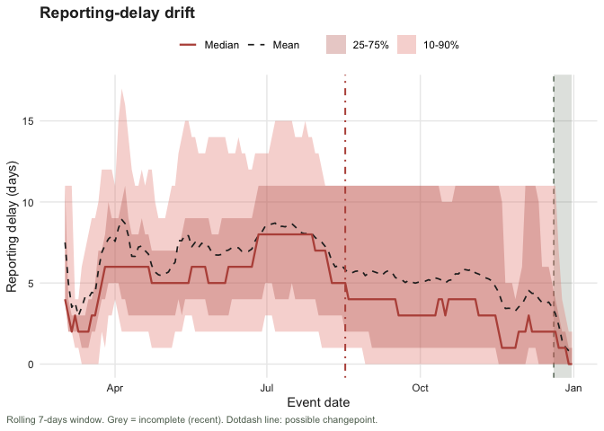

tbl.now provides an extension of the tibble() for storing, validating, and manipulating epidemiological nowcasting data. It standardizes the representation of event dates, report dates, strata, temporal covariates, and data types (linelist and cumulative), ensuring that downstream models within the diseasenowcasting ecosystem can rely on a consistent interface.
Installation
Install the development version from GitHub:
# install.packages("pak") # <- uncomment if you do not have `pak`
pak::pkg_install("RodrigoZepeda/tbl.now")Load the package:
A minimal example
Suppose you have a dataset where n cases reported on report_date belong to events occurring on event_date:
df <- tibble(
event_date = c(
ymd("2023-12-25"), ymd("2023-12-26"),
ymd("2023-12-25"), ymd("2023-12-26")
),
report_date = c(
ymd("2023-12-26"), ymd("2023-12-26"),
ymd("2023-12-27"), ymd("2023-12-27")
),
n = c(10, 2, 5, 11)
)Convert it to a tbl_now():
df_now <- df |>
tbl_now(event_date = event_date, report_date = report_date, case_count = n)
#> i Identified data as <count-incidence> with counts in column "n".
df_now
#> # A tibble: 4 x 6
#> # Data type: "count-incidence"
#> # Frequency: Event: `days` | Report: `days`
#> event_date report_date n .event_num .report_num .delay
#> <date> <date> <dbl> <dbl> <dbl> <dbl>
#> [event_date] [report_date] [cases] [...] [...] [...]
#> 1 2023-12-25 2023-12-26 10 0 1 1
#> 2 2023-12-26 2023-12-26 2 1 1 0
#> 3 2023-12-25 2023-12-27 5 0 2 2
#> 4 2023-12-26 2023-12-27 11 1 2 1
#> # ----------------------------------------------------------------------------------------------------------------------------------------------------------------
#> # Now: 2023-12-27 | Event date: "event_date" | Report date: "report_date"
#> # ----------------------------------------------------------------------------------------------------------------------------------------------------------------tbl_now() automatically:
infers that the data type is count-incidence (each report-event combination has a case count of how many were recorded for that specific mix).
determines the date units as daily for both event and report frequencies.
computes numerical versions of the dates:
.event_num,.report_num, and.delay(difference between event and report times)sets the now to the most recent reporting date
You can use it like any tibble:
df_now |>
filter(n > 5)
#> # A tibble: 2 x 6
#> # Data type: "count-incidence"
#> # Frequency: Event: `days` | Report: `days`
#> event_date report_date n .event_num .report_num .delay
#> <date> <date> <dbl> <dbl> <dbl> <dbl>
#> [event_date] [report_date] [cases] [...] [...] [...]
#> 1 2023-12-25 2023-12-26 10 0 1 1
#> 2 2023-12-26 2023-12-27 11 1 2 1
#> # ----------------------------------------------------------------------------------------------------------------------------------------------------------------
#> # Now: 2023-12-27 | Event date: "event_date" | Report date: "report_date"
#> # ----------------------------------------------------------------------------------------------------------------------------------------------------------------Note Linelist, count-incidence and count-cumulative data is available for a
tbl_now. See the data types section oftbl_now()for more information.
Adding strata
If strata was given, the tbl_now() can easily tag the corresponding strata.
# Add the column using dplyr:
df_now <- df_now |>
mutate(sex = c("M", "M", "F", "M"))
df_now
#> # A tibble: 4 x 7
#> # Data type: "count-incidence"
#> # Frequency: Event: `days` | Report: `days`
#> event_date report_date n .event_num .report_num .delay sex
#> <date> <date> <dbl> <dbl> <dbl> <dbl> <chr>
#> [event_date] [report_date] [cases] [...] [...] [...] [...]
#> 1 2023-12-25 2023-12-26 10 0 1 1 M
#> 2 2023-12-26 2023-12-26 2 1 1 0 M
#> 3 2023-12-25 2023-12-27 5 0 2 2 F
#> 4 2023-12-26 2023-12-27 11 1 2 1 M
#> # ----------------------------------------------------------------------------------------------------------------------------------------------------------------
#> # Now: 2023-12-27 | Event date: "event_date" | Report date: "report_date"
#> # ----------------------------------------------------------------------------------------------------------------------------------------------------------------Use the add_strata to specify the new column is a stratum:
df_now |>
add_strata("sex")
#> # A tibble: 4 x 7
#> # Data type: "count-incidence"
#> # Frequency: Event: `days` | Report: `days`
#> event_date report_date n .event_num .report_num .delay sex
#> <date> <date> <dbl> <dbl> <dbl> <dbl> <chr>
#> [event_date] [report_date] [cases] [...] [...] [...] [strata]
#> 1 2023-12-25 2023-12-26 10 0 1 1 M
#> 2 2023-12-26 2023-12-26 2 1 1 0 M
#> 3 2023-12-25 2023-12-27 5 0 2 2 F
#> 4 2023-12-26 2023-12-27 11 1 2 1 M
#> # ----------------------------------------------------------------------------------------------------------------------------------------------------------------
#> # Now: 2023-12-27 | Event date: "event_date" | Report date: "report_date"
#> # Strata: "sex"
#> # ----------------------------------------------------------------------------------------------------------------------------------------------------------------The object now records "sex" as a stratification variable, preserved through downstream operations.
Adding temporal effects
Temporal covariates help nowcasting models incorporate weekly seasonality, holiday effects, etc. Define the effects:
t_eff <- temporal_effects(
day_of_week = TRUE,
week_of_year = TRUE,
holidays = cal_us_federal()
)
t_eff
#> -- Temporal Effects --------------------------------------------------------------------------------------------------------------------------------------------
#> The following effects are in place:
#> * "day_of_week"
#> * "week_of_year"
#> * "holidays":
#> New Year's Day, US Martin Luther King Jr. Day, US Presidents' Day, US Memorial Day, US Juneteenth, US Independence Day, US Labor Day, US Indigenous Peoples' Day, US Veterans Day, US Thanksgiving, and ChristmasAttach them to the dataset:
df_now <- df_now |>
add_temporal_effects(t_eff)
df_now
#> # A tibble: 4 x 7
#> # Data type: "count-incidence"
#> # Frequency: Event: `days` | Report: `days`
#> event_date report_date n .event_num .report_num .delay sex
#> <date> <date> <dbl> <dbl> <dbl> <dbl> <chr>
#> [event_date] [report_date] [cases] [...] [...] [...] [...]
#> 1 2023-12-25 2023-12-26 10 0 1 1 M
#> 2 2023-12-26 2023-12-26 2 1 1 0 M
#> 3 2023-12-25 2023-12-27 5 0 2 2 F
#> 4 2023-12-26 2023-12-27 11 1 2 1 M
#> # ----------------------------------------------------------------------------------------------------------------------------------------------------------------
#> # Now: 2023-12-27 | Event date: "event_date" | Report date: "report_date"
#> # T. effects (lazy): [event_date] day_of_week, week_of_year, holidays
#> # ----------------------------------------------------------------------------------------------------------------------------------------------------------------This lazily adds to the table day_of_week, week_of_year, and holiday related to event_date. However it does not compute. Use compute_temporal_effects() to add them as columns:
df_now |>
compute_temporal_effects()
#> # A tibble: 4 x 10
#> # Data type: "count-incidence"
#> # Frequency: Event: `days` | Report: `days`
#> event_date report_date n .event_num .report_num .delay sex .event_day_of_week .event_week_of_year .event_holiday
#> <date> <date> <dbl> <dbl> <dbl> <dbl> <chr> <fct> <fct> <int>
#> [event_date] [report_date] [cases] [...] [...] [...] [...] [t_effect] [t_effect] [t_effect]
#> 1 2023-12-25 2023-12-26 10 0 1 1 M Monday 1 1
#> 2 2023-12-26 2023-12-26 2 1 1 0 M Tuesday 1 0
#> 3 2023-12-25 2023-12-27 5 0 2 2 F Monday 1 1
#> 4 2023-12-26 2023-12-27 11 1 2 1 M Tuesday 1 0
#> # ----------------------------------------------------------------------------------------------------------------------------------------------------------------
#> # Now: 2023-12-27 | Event date: "event_date" | Report date: "report_date"
#> # T. effects: [event_date] day_of_week, week_of_year, holidays
#> # T. effect cols: ".event_day_of_week", ".event_week_of_year", and ".event_holiday"
#> # ----------------------------------------------------------------------------------------------------------------------------------------------------------------You can also attach effects related to the report_date via the date_type argument:
r_eff <- temporal_effects(day_of_week = TRUE)
df_now |>
add_temporal_effects(r_eff, date_type = "report_date")
#> # A tibble: 4 x 7
#> # Data type: "count-incidence"
#> # Frequency: Event: `days` | Report: `days`
#> event_date report_date n .event_num .report_num .delay sex
#> <date> <date> <dbl> <dbl> <dbl> <dbl> <chr>
#> [event_date] [report_date] [cases] [...] [...] [...] [...]
#> 1 2023-12-25 2023-12-26 10 0 1 1 M
#> 2 2023-12-26 2023-12-26 2 1 1 0 M
#> 3 2023-12-25 2023-12-27 5 0 2 2 F
#> 4 2023-12-26 2023-12-27 11 1 2 1 M
#> # ----------------------------------------------------------------------------------------------------------------------------------------------------------------
#> # Now: 2023-12-27 | Event date: "event_date" | Report date: "report_date"
#> # T. effects (lazy): [event_date] day_of_week, week_of_year, holidays | [report_date] day_of_week
#> # ----------------------------------------------------------------------------------------------------------------------------------------------------------------Working with the “now”
You may override the default now to perform historical evaluation or because your most recent cases are zeroes via change_now:
df_pruned <- df_now |>
filter(report_date <= ymd("2023-12-26")) |>
change_now(ymd("2023-12-26"))You can retrieve the current now with get_now:
get_now(df_pruned)
#> [1] "2023-12-26"Visualizing a tbl_now
The autoplot() method gives a quick diagnostic overview of a tbl_now.
library(ggplot2)
library(patchwork)
data("mpoxdat")
mpoxdat_now <- tbl_now(mpoxdat,
event_date = dx_date,
report_date = dx_report_date,
case_count = n,
verbose = FALSE
)
autoplot(mpoxdat_now)
Describing and diagnosing a tbl_now
What is in the data?
summary() returns a tibble, not printed text, so every number in it can be filtered, joined or plotted. One row describes one quantity, and component says which block it belongs to:
summary(mpoxdat_now) |>
filter(component == "cases") |>
select(quantity, n, total, mean, sd, q50, max, prop_zero)
#> # A tibble: 2 x 8
#> quantity n total mean sd q50 max prop_zero
#> <chr> <int> <dbl> <dbl> <dbl> <dbl> <dbl> <dbl>
#> 1 per_event_date 316 3323 10.5 22.3 0 98 0.703
#> 2 per_report_date 313 3323 10.6 23.0 0 109 0.696Seventy percent of the event dates carry no cases at all (prop_zero), which is the first thing worth knowing before choosing a model. The coverage block gives the reach of the object, including its now:
summary(mpoxdat_now) |>
filter(component == "coverage", quantity %in% c("total_cases", "event_date", "report_date", "now")) |>
select(quantity, n, total, date_min, date_max)
#> # A tibble: 4 x 5
#> quantity n total date_min date_max
#> <chr> <int> <dbl> <date> <date>
#> 1 total_cases 585 3323 NA NA
#> 2 event_date 94 3323 2022-07-08 2022-10-12
#> 3 report_date 95 3323 2022-07-11 2023-05-19
#> 4 now NA NA 2023-05-19 2023-05-19The other blocks are delay, zero_run, composition, autocorrelation, completeness and growth, and each is also a function of its own — delay_summary(), prop_censored(), reporting_completeness() and so on. See ?tbl_now_summary.
Is anything wrong with it?
diagnose() answers that, returning findings sorted worst first. status is an ordered factor (error > warning > note > ok > not_run > skipped), so filtering to what needs acting on is a comparison:
diagnose(mpoxdat_now) |>
filter(status <= "note") |>
select(check, scope, status, n_affected, message)
#> # A tibble: 3 x 5
#> check scope status n_affected message
#> <chr> <chr> <ord> <dbl> <chr>
#> 1 duplicates key warning 832 "*Non-unique*: 832 rows share an (dx_date, dx_report_date) combination."
#> 2 declarations undeclared note 1 "1 column \"race\" is not declared as strata or covariates."
#> 3 now now_gap_event note 219 "The last event date is 219 days before now (\"2023-05-19\")."It caught a real problem in the object built above: race was never declared, so it silently splits every (event_date, report_date) cell into several rows. That is the most common source of surprising results in this package. Declaring it fixes the finding:
mpoxdat_now |>
add_strata(race) |>
diagnose(checks = "duplicates") |>
select(check, status, n_affected, message)
#> # A tibble: 1 x 4
#> check status n_affected message
#> <chr> <ord> <dbl> <chr>
#> 1 duplicates ok 0 Every row is unique on (dx_date, dx_report_date) and everything the object declares.diagnose() is deliberately structural: it never runs a statistical test, so it is fast and its answer never depends on a random seed. The questions that do need a test come back as not_run signposts naming the call that answers them — which are exactly the two sections that follow:
diagnose_signposts(mpoxdat_now) |>
select(scope, status, message)
#> # A tibble: 4 x 3
#> scope status message
#> <chr> <ord> <chr>
#> 1 confirmation_batches not_run "Run: diagnose_batches(x, axis = \"confirmation\")"
#> 2 report not_run "Run: diagnose_drift(x, axis = \"report\")"
#> 3 report_batches not_run "Run: diagnose_batches(x, axis = \"report\")"
#> 4 confirmation skipped "The object carries no confirmation process."Diagnosing reporting problems
tbl.now also diagnoses common reporting artefacts directly from the data.
Does the reporting delay drift over time?
The plot_delay_drift() function draws a rolling fan chart of the delay distribution:
data("covid_colombia")
covidat_now <- covid_colombia |>
filter(notification_date <= as.Date("2021/01/01"),
diagnosis_date <= as.Date("2021/01/01")) |>
tbl_now(
event_date = notification_date,
report_date = diagnosis_date,
case_count = n,
strata = sex,
verbose = FALSE,
data_type = "count-incidence"
)
plot_delay_drift(covidat_now, changepoint = TRUE)
We can see that the delay does change in time varying a lot at the beginning of the epidemic (before April) then stabilizing between April and July, and finally shifting downwards around August. The same result can be observed with diagnose_drift() which checks, statistically, via a modified Mann-Kendall test, whether there is a drift in the delay:
diagnose_drift(covidat_now, method = "yue-pilon")
#> # A tibble: 2 x 9
#> strata stat n tau sens_slope statistic p_value method drift
#> <chr> <chr> <int> <dbl> <dbl> <dbl> <dbl> <chr> <lgl>
#> 1 all median 292 -0.207 -0.00905 -2.84 0.00447 yue-pilon TRUE
#> 2 all spread 292 0.156 0 2.37 0.0177 yue-pilon TRUEThe changepoint option uses Pettitt’s test to identify one changepoint in the data. It can be recovered with diagnose_changepoint():
diagnose_changepoint(covidat_now)
#> # A tibble: 2 x 10
#> strata stat n changepoint statistic p_value before after shift changepoint_detected
#> <chr> <chr> <int> <date> <dbl> <dbl> <dbl> <dbl> <dbl> <lgl>
#> 1 all median 292 2020-08-17 11818 5.41e-15 5.90 3.92 -1.98 TRUE
#> 2 all spread 292 2020-05-09 8670 2.89e- 8 8.85 11.1 2.25 TRUEAs context, on August 10th 2020 the Colombian government anounced the massive use of antigen testing for COVID-19 and in August 25th implemented the PRASS programme which shifted the sampling and reporting paradigm for the country (Osorio Saldarriga et al). These are the changes potentially identified by diagnose_changepoint().
Pettitt’s test in diagnose_changepoint() detects only one change point: the largest one. If your data has more than one changepoint break your data into chunks and run the test for each of them.
Batch reporting
Some systems might withhold results and then release their backlog at once. Such batches displace reports along the report axis by first not presenting them in time and then reporting all in bulk. Batches do not create new cases they just shift their report dates to a later period (see the corresponding article for more information).
The diagnose_batches() function uses this idea to identify batches. The confidence level can be set with alpha. For example here we set a level of 80%:
covidat_now |>
remove_all_strata() |>
diagnose_batches(period = 7, alpha = 0.2) #> # A tibble: 302 x 9
#> report_date reported baseline p_transport_bh batch stratum deficit delta p_transport
#> <date> <dbl> <dbl> <dbl> <lgl> <chr> <dbl> <dbl> <dbl>
#> 1 2020-07-19 7880 5273. 0.179 TRUE all 2806. -199. 0.0508
#> 2 2020-10-02 9713 7908. 0.159 TRUE all 3042. -1237. 0.0437
#> 3 2020-11-20 11259 8655. 0.108 TRUE all 3636. -1032. 0.0265
#> 4 2020-03-06 1 NA NA FALSE all NA NA NA
#> 5 2020-03-07 0 NA NA FALSE all NA NA NA
#> 6 2020-03-08 0 NA NA FALSE all NA NA NA
#> 7 2020-03-09 2 NA NA FALSE all NA NA NA
#> 8 2020-03-10 0 NA NA FALSE all NA NA NA
#> 9 2020-03-11 6 NA NA FALSE all NA NA NA
#> 10 2020-03-12 4 NA NA FALSE all NA NA NA
#> # i 292 more rowsAdditional batch detection tools can be found in the batch-reporting article.
Extreme delays
Extreme delays can be censored with the censor_delays_above() function that assigns upper bounds to the delay. In the following data frame for example, an extreme delay of 300 is marked as censored with that function:
df <- data.frame(
onset = as.Date("2020-01-01") + c(0, 0, 1, 2),
reported = as.Date("2020-01-01") + c(1, 5, 2, 300)
)
tn <- tbl_now(df,
event_date = onset, report_date = reported,
data_type = "linelist", verbose = FALSE
)
# the 300-day report becomes censored (an upper bound on its delay)
censor_delays_above(tn, max_delay = 60)
#> i Marked 1 report with delay > 60 days as censored.
#> * This delay is now an upper bound (is_censored).
#> # A tibble: 4 x 6
#> # Data type: "linelist"
#> # Frequency: Event: `days` | Report: `days`
#> onset reported .event_num .report_num .delay .is_censored
#> <date> <date> <dbl> <dbl> <dbl> <lgl>
#> [event_date] [report_date] [...] [...] [...] [is_censored]
#> 1 2020-01-01 2020-01-02 0 1 1 FALSE
#> 2 2020-01-01 2020-01-06 0 5 5 FALSE
#> 3 2020-01-02 2020-01-03 1 2 1 FALSE
#> 4 2020-01-03 2020-10-27 2 300 298 TRUE
#> # ----------------------------------------------------------------------------------------------------------------------------------------------------------------
#> # Now: 2020-10-27 | Event date: "onset" | Report date: "reported"
#> # left-censored indicator: ".is_censored"
#> # ----------------------------------------------------------------------------------------------------------------------------------------------------------------Learning more
- Introduction vignette: https://rodrigozepeda.github.io/tbl.now/articles/tbl.now.html for the full anatomy of a
tbl_now, data types, and temporal effects. - End-to-end tutorial on real, messy surveillance data <U+2014> cleaning, diagnostics and nowcasting: https://rodrigozepeda.github.io/tbl.now/articles/Example.html
- Tutorial on detecting batches and other reporting-delay artifacts: https://rodrigozepeda.github.io/tbl.now/articles/batch-reporting.html
- Comparing nowcasting engines on one dataset: https://rodrigozepeda.github.io/tbl.now/articles/nowcasting-models.html
- Package reference: https://rodrigozepeda.github.io/tbl.now/reference/